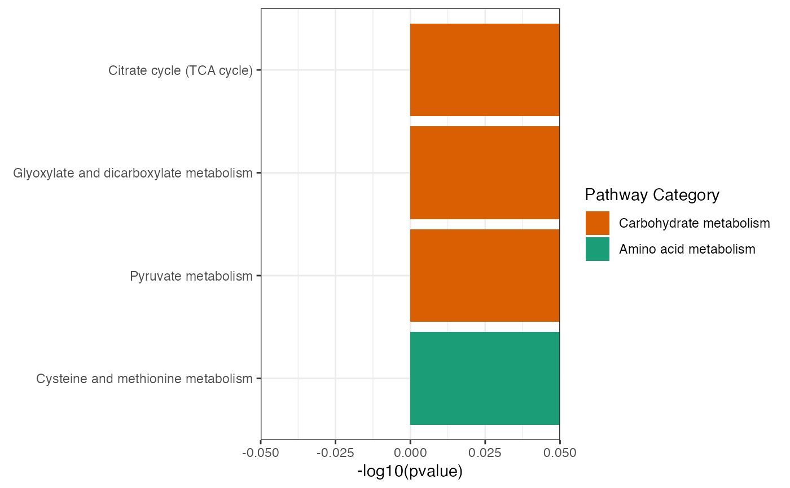

KEGG pathway analysis
Usage
PathwayAnalysis(
name,
out = "Extended",
p_cutoff = 0.05,
noverlap_cutoff = 0,
test = c("hypergeo", "fisher", "binomial")
)Arguments
- name
The genes' or the metabolites' names which to analysis pathway
- out
The pathway type for gene or metabolite,or extended pathway included genes and metabolites,default is "extended",alternative is "metabolite" and "gene"
- p_cutoff
p_cutoff used to declare the significant terms. By default, it is set to 0.05
- noverlap_cutoff
noverlap_cutoff used to declare the number of overlap. By default, it is set to 0
- test
the test statistic used. It can be "fisher" for using fisher's exact test, "hypergeo" for using hypergeometric test, or "binomial" for using binomial test. Fisher's exact test is to test the independence between gene group (genes belonging to a group or not) and gene annotation (genes annotated by a term or not), and thus compare sampling to the left part of background (after sampling without replacement). Hypergeometric test is to sample at random (without replacement) from the background containing annotated and non-annotated genes, and thus compare sampling to background. Unlike hypergeometric test, binomial test is to sample at random (with replacement) from the background with the constant probability. In terms of the ease of finding the significance, they are in order: hypergeometric test > fisher's exact test > binomial test. In other words, in terms of the calculated p-value, hypergeometric test < fisher's exact test < binomial test
Examples
name <- c("C15973","C16254","MDH1")
result <- PathwayAnalysis(name,out="Extended",p_cutoff=0.05,noverlap_cutoff=0,test="hypergeo")
#> Start at 2024-11-06 14:55:22.078571
#>
#> Warning: one argument not used by format '
#> #######################################################'
#>
#> #######################################################
#> 'xEnricher' is being called (2024-11-06 14:55:22.082321):
#> Warning: one argument not used by format '#######################################################'
#> #######################################################
#> First, generate a subgraph induced (via 'all_paths' mode) by the annotation data (2024-11-06 14:55:22.084289) ...
#> Next, prepare enrichment analysis (2024-11-06 14:55:22.106855) ...
#> There are 3 genes/SNPs of interest tested against 4715 genes/SNPs as the background (annotatable only? TRUE) (2024-11-06 14:55:22.109188)
#> Third, perform enrichment analysis using 'hypergeo' test (2024-11-06 14:55:22.11446) ...
#> There are 84 terms being used, each restricted within [1,2000] annotations
#> Last, adjust the p-values for 84 terms (with 0 minimum overlaps) using the BH method (2024-11-06 14:55:22.185122) ...
#> Warning: one argument not used by format '#######################################################'
#> #######################################################
#> 'xEnricher' has been finished (2024-11-06 14:55:22.243706)!
#> Warning: one argument not used by format '#######################################################
#> '
#> #######################################################
#>
#> End at 2024-11-06 14:55:22.245496
#> Runtime in total (xEnricherYours): 0 secs
result
#> $gp
#>
#> $output
#> # A tibble: 8 × 16
#> # Groups: name, nAnno, nOverlap, fc, zscore, pvalue, adjp, or, CIl, CIu,
#> # distance, namespace, members_Overlap, members_Overlap_keggid [8]
#> name nAnno nOverlap fc zscore pvalue adjp or CIl CIu distance
#> <chr> <dbl> <dbl> <dbl> <dbl> <dbl> <dbl> <dbl> <dbl> <dbl> <chr>
#> 1 Citrat… 50 3 94.3 16.7 0 0 Inf 39.6 Inf 1
#> 2 Cystei… 117 1 13.4 3.44 1.8 e-3 1.9e-2 19.8 0.333 381 1
#> 3 Glycol… 98 1 16 3.8 1.3 e-3 1.5e-2 23.7 0.399 458 1
#> 4 Glyoxy… 94 1 16.7 3.88 1.2 e-3 1.5e-2 24.8 0.416 478 1
#> 5 Lipoic… 17 1 92.5 9.53 3.7 e-5 1 e-3 144 2.34 2980 1
#> 6 Propan… 72 1 21.8 4.49 6.8 e-4 1.4e-2 32.5 0.546 631 1
#> 7 Pyruva… 79 2 39.8 8.77 4.50e-6 1.9e-4 119 6.15 6680 1
#> 8 Valine… 90 1 17.5 3.98 1.1 e-3 1.5e-2 25.9 0.435 500 1
#> # ℹ 5 more variables: namespace <chr>, members_Overlap <chr>,
#> # members_Overlap_keggid <chr>, members_Anno_keggid <chr>, members_Anno <chr>
#>
#> $p_barplot
#>
#> attr(,"class")
#> [1] "eLadder"
name <- "C15973"
result <- PathwayAnalysis(name,out="metabolite",p_cutoff=0.05,noverlap_cutoff=0,test="hypergeo")
#> Start at 2024-11-06 14:55:22.830107
#>
#> Warning: one argument not used by format '
#> #######################################################'
#>
#> #######################################################
#> 'xEnricher' is being called (2024-11-06 14:55:22.834121):
#> Warning: one argument not used by format '#######################################################'
#> #######################################################
#> First, generate a subgraph induced (via 'all_paths' mode) by the annotation data (2024-11-06 14:55:22.837209) ...
#> Next, prepare enrichment analysis (2024-11-06 14:55:22.851207) ...
#> There are 1 genes/SNPs of interest tested against 3047 genes/SNPs as the background (annotatable only? TRUE) (2024-11-06 14:55:22.853254)
#> Third, perform enrichment analysis using 'hypergeo' test (2024-11-06 14:55:22.857878) ...
#> There are 81 terms being used, each restricted within [1,2000] annotations
#> Last, adjust the p-values for 81 terms (with 0 minimum overlaps) using the BH method (2024-11-06 14:55:22.88555) ...
#> Warning: one argument not used by format '#######################################################'
#> #######################################################
#> 'xEnricher' has been finished (2024-11-06 14:55:22.941181)!
#> Warning: one argument not used by format '#######################################################
#> '
#> #######################################################
#>
#> End at 2024-11-06 14:55:22.944236
#> Runtime in total (xEnricherYours): 0 secs
result
#> $gp
#>
#> $output
#> # A tibble: 6 × 16
#> # Groups: name, nAnno, nOverlap, fc, zscore, pvalue, adjp, or, CIl, CIu,
#> # distance, namespace, members_Overlap, members_Overlap_keggid [6]
#> name nAnno nOverlap fc zscore pvalue adjp or CIl CIu distance
#> <chr> <dbl> <dbl> <dbl> <dbl> <dbl> <dbl> <dbl> <dbl> <dbl> <chr>
#> 1 Citrate c… 20 1 152 12.3 0 0 Inf 3.88 Inf 1
#> 2 Glycolysi… 31 1 98.3 9.86 0 0 Inf 2.49 Inf 1
#> 3 Lipoic ac… 13 1 234 15.3 0 0 Inf 5.98 Inf 1
#> 4 Propanoat… 40 1 76.2 8.67 0 0 Inf 1.93 Inf 1
#> 5 Pyruvate … 32 1 95.2 9.71 0 0 Inf 2.42 Inf 1
#> 6 Valine, l… 42 1 72.5 8.46 0 0 Inf 1.83 Inf 1
#> # ℹ 5 more variables: namespace <chr>, members_Overlap <chr>,
#> # members_Overlap_keggid <chr>, members_Anno_keggid <chr>, members_Anno <chr>
#>
#> $p_barplot
#>
#> attr(,"class")
#> [1] "eLadder"
name <- "MDH1"
result <- PathwayAnalysis(name,out="gene",p_cutoff=0.05,noverlap_cutoff=0,test="hypergeo")
#> Start at 2024-11-06 14:55:23.498786
#>
#> Warning: one argument not used by format '
#> #######################################################'
#>
#> #######################################################
#> 'xEnricher' is being called (2024-11-06 14:55:23.502827):
#> Warning: one argument not used by format '#######################################################'
#> #######################################################
#> First, generate a subgraph induced (via 'all_paths' mode) by the annotation data (2024-11-06 14:55:23.505731) ...
#> Next, prepare enrichment analysis (2024-11-06 14:55:23.518123) ...
#> There are 1 genes/SNPs of interest tested against 1668 genes/SNPs as the background (annotatable only? TRUE) (2024-11-06 14:55:23.519673)
#> Third, perform enrichment analysis using 'hypergeo' test (2024-11-06 14:55:23.524216) ...
#> There are 84 terms being used, each restricted within [1,2000] annotations
#> Last, adjust the p-values for 84 terms (with 0 minimum overlaps) using the BH method (2024-11-06 14:55:23.551424) ...
#> Warning: one argument not used by format '#######################################################'
#> #######################################################
#> 'xEnricher' has been finished (2024-11-06 14:55:23.613144)!
#> Warning: one argument not used by format '#######################################################
#> '
#> #######################################################
#>
#> End at 2024-11-06 14:55:23.616315
#> Runtime in total (xEnricherYours): 0 secs
result
#> $gp
#>
#> $output
#> # A tibble: 4 × 16
#> # Groups: name, nAnno, nOverlap, fc, zscore, pvalue, adjp, or, CIl, CIu,
#> # distance, namespace, members_Overlap, members_Overlap_keggid [4]
#> name nAnno nOverlap fc zscore pvalue adjp or CIl CIu distance
#> <chr> <dbl> <dbl> <dbl> <dbl> <dbl> <dbl> <dbl> <dbl> <dbl> <chr>
#> 1 Citrate c… 30 1 55.6 7.39 0 0 Inf 1.4 Inf 1
#> 2 Cysteine … 51 1 32.7 5.63 0 0 Inf 0.813 Inf 1
#> 3 Glyoxylat… 30 1 55.6 7.39 0 0 Inf 1.4 Inf 1
#> 4 Pyruvate … 47 1 35.5 5.87 0 0 Inf 0.884 Inf 1
#> # ℹ 5 more variables: namespace <chr>, members_Overlap <chr>,
#> # members_Overlap_keggid <chr>, members_Anno_keggid <chr>, members_Anno <chr>
#>
#> $p_barplot

#>
#> attr(,"class")
#> [1] "eLadder"